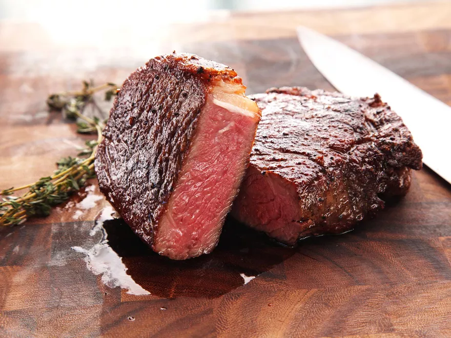

Steak

Description
This Pan-Seared Steak has a garlic butter that makes it taste like a steakhouse quality meal.
Ingredients
Steps
- Sear both sides of the steak
- Cook on one side for 7 1/2 minutes at 350 degrees
- Flip and cook other side for 4 minutes
- Let rest for 5 minutes